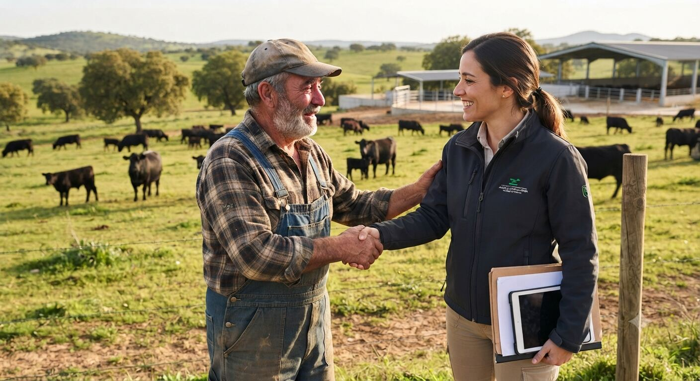

Ingeniería técnica agrícola con trato directo
Consultoría Agrícola Integral nace para ofrecer una ingeniería agrícola y rural cercana, técnica y actualizada, sin perder el contacto directo con quien trabaja la tierra.

Por qué esta forma de trabajar
La Comunitat Valenciana atraviesa un momento especialmente exigente para el sector agrario: la recuperación tras la DANA de 2024, la sequía y el encarecimiento del agua y la energía, y una normativa cada vez más técnica en materia de ayudas, PAC y edificación rural. En este contexto, muchas explotaciones necesitan un interlocutor técnico que entienda tanto de ingeniería como de la realidad diaria del campo.
Por eso este proyecto se apoya en dos ideas simples: contacto directo, sin intermediarios ni redes sociales, y herramientas de inteligencia artificial aplicadas a cada área de trabajo, para dar respuestas más rápidas y mejor fundamentadas.
Trayectoria profesional detrás del proyecto
Consultoría Agrícola Integral es un proyecto de nueva creación, pero no parte de cero. Nace de la trayectoria profesional de un grupo de ingenieros técnicos agrícolas que ha desarrollado su carrera trabajando para la administración pública y para empresas de ingeniería del sector. Esa experiencia, acumulada durante años trabajando para terceros, es la base técnica que ahora ponemos al servicio de cada proyecto que asumimos de forma directa.
- Citricultura
- Asesoría agronómica
- Calidad agroalimentaria
- Subvenciones y ayudas (SIGPAC, REA, PAC)
- Segregaciones y peritaciones
- Sanidad vegetal
- Obra y edificación rural
- Seguridad y salud en explotaciones agrarias
Formación y ámbito de trabajo
El trabajo se desarrolla desde la ingeniería técnica agrícola, cubriendo trámites y gestión de parcelas, valoraciones y peritaciones, asesoramiento agronómico, proyectos de construcción rural, eficiencia energética e hídrica, medio ambiente y huella de carbono, formación técnica para entidades, y ayudas sectoriales y de emergencia de la Generalitat (DANA, apicultura, Huerta de València, URA), con capacidad para tramitar ante ayuntamientos, Conselleria de Agricultura y otros organismos competentes en la Comunitat Valenciana.
El papel de la IA en cada proyecto
La inteligencia artificial no sustituye el criterio técnico ni la visita sobre el terreno: se usa como apoyo para simular escenarios (abonado, riego, energía, viabilidad de segregación) y llegar a la consulta con una primera estimación ya sobre la mesa, ahorrando tiempo a ambas partes.